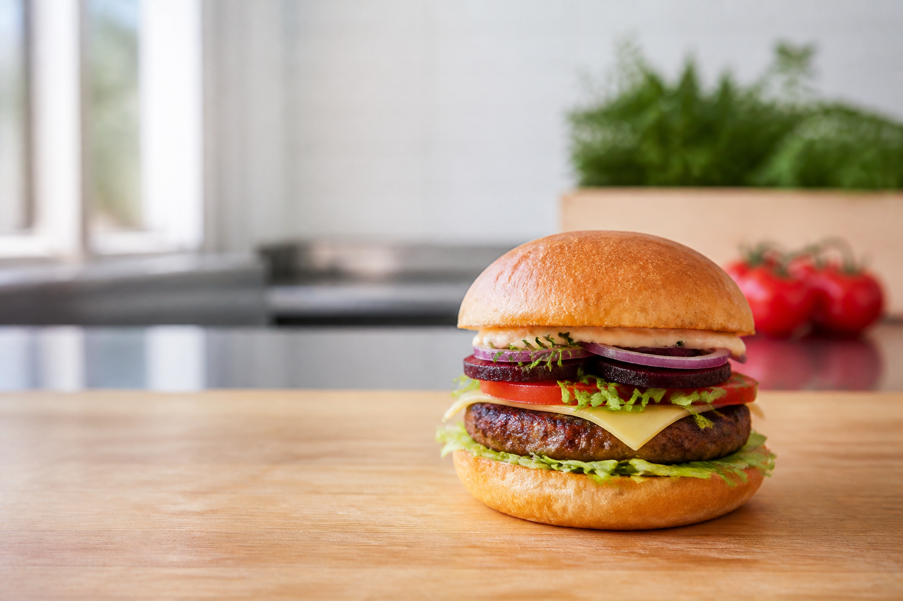
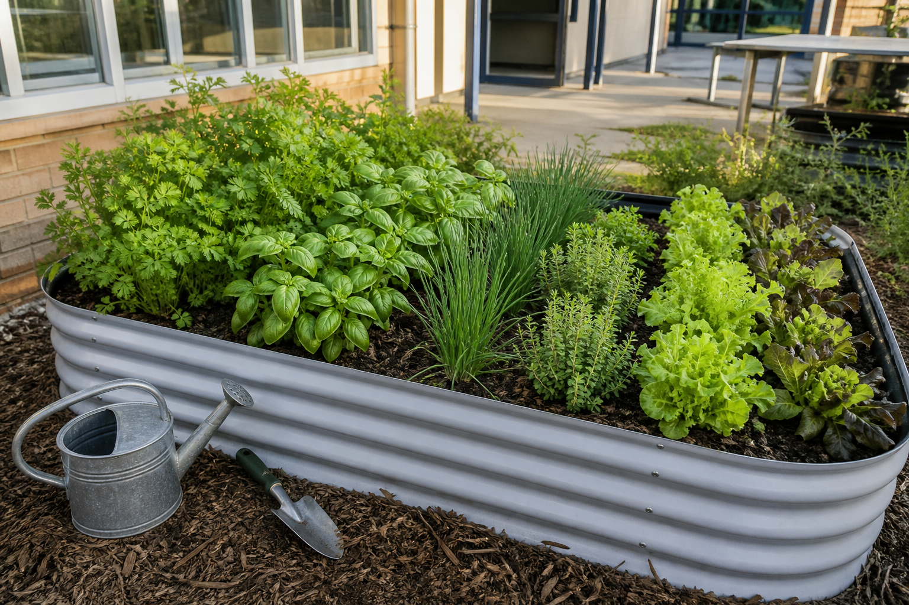

1. Learn
Read the short theory sections and use the diagrams, examples and source-backed practical guidance.
Technology Mandatory · Food and agricultural practices
Investigate ingredients, grow and select fresh produce, develop a signature burger, work safely and explain the choices behind your final design.

Your design challenge
Develop a product for a small local burger business using locally grown produce and home-grown herbs while balancing taste, appearance, nutrition, safety, sustainability and user needs.
How the course works
Use the same learning rhythm while the burger design grows from research to evaluation.
Read the short theory sections and use the diagrams, examples and source-backed practical guidance.
Complete ten questions for every named theory section and return precisely when feedback directs you.
Write design decisions and use the connected project activities as you go.
Review the saved responses in My folio, then print or download a backup.
Student evidence. Writing autosaves on this device. It is practice evidence, not a Classroom submission.
Ten-module pathway
Module 3
Prepare a safe workstation and organise a practical lesson.
Open Module 3 →Module 5
Trace burger ingredients to agricultural industries and local sources.
Open Module 5 →Module 10
Judge the burger against criteria and identify improvements.
Open Module 10 →
Food and agricultural practices
Fresh herbs and local produce connect the burger to soil, water, climate, growers, transport, markets and community businesses. The course asks you to see the full system—not only the finished meal.
Explore garden to kitchenReady to collect evidence?
Open My folio at any time to review saved responses, add final evidence, download a backup or print a clean copy.